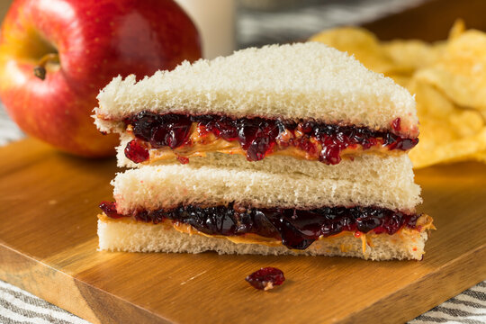

How to make a Good dang Sammich

A very beautiful and delicious sandwich enjoyed by the masses
One could say that the Peanut butter and Jelly sandwich has become an American staple served
in traditional school cafeterias and across many homes in America. Today, we will be instructing on
how to make this delicious sandwich step by step with basic ingrediants found in most homes. Please enjoy!
Items needed:
- A Toaster. Mandatory.
- Your choice of bread
- Your choice of peanut butter
- A Strawberry Jam. No exceptions or you shall be smited
- Butter, whipped, unsalted
- Procure all necessary ingrediants and lay them at your workstation
- Unpackage your freshly bought/baked break. A glorious sandwich deserves the best ingrediants
- Toast bread until satisfied. I prefer slightly tanned bread for optimal levels of crunchiness and doneness, but always use your own judgement.
- Grab your knife and spread peanut butter onto the warm bread as quickly as possible. This allows for the warmth of the bread to heat and melt the butter, leaving a nice and creamy consistency
- Grab that jelly, and spread it onto the other slice. Lavish the bread in that jelly goodness to your hearts content
- Now spread some butter onto the slice of toast with the jelly. Small amounts will suffice due to the already existing peanut butter
- (optional) Cut that bread crust if you can muster up the strength. Who likes that stuff anyways?
Walah~ you're all done. Now to maximize enjoyment, I reccomend to pour a glass of OJ or whole milk alongside the sandwich. Flip that TV on or start writing that LEET code and enjoy >:)